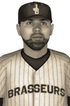

|
|
|  | Low Hosts Charity Softball Game Saturday, November 2nd, 1929 Nordiques left fielder Billy Low hosted a softball game today to benefit local charities and youth leagues. In addition to Low, the game featured several of his Quebec teammates, Manager Donatien Auger, and a handful of other players from around the league. Several local celebrities, athletes, and media personalities were also in attendance. "I was impressed with how many people turned out for this event," said Quebec's Chairat Lookjan, who starred in the game. "Billy really did an outstanding job getting it organized." Low's big league manager was equally pleased. "We had a good turnout and we raised a lot of money for some really worthwhile causes," said Donatien Auger. "Billy should be very proud." Incidentally, Low's ML All-Stars beat the Celebrity All-Stars squad by a score of 7-5. |   |